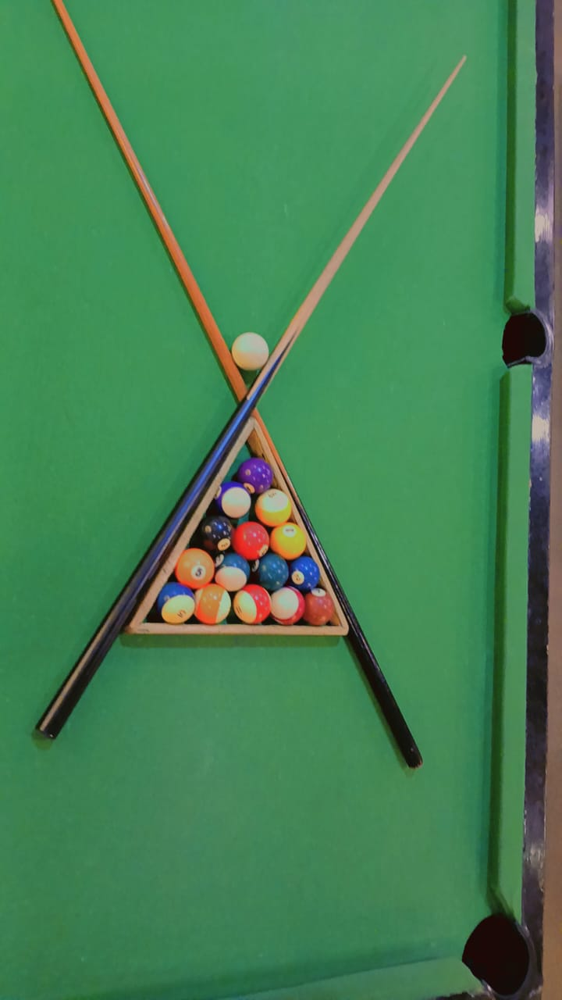
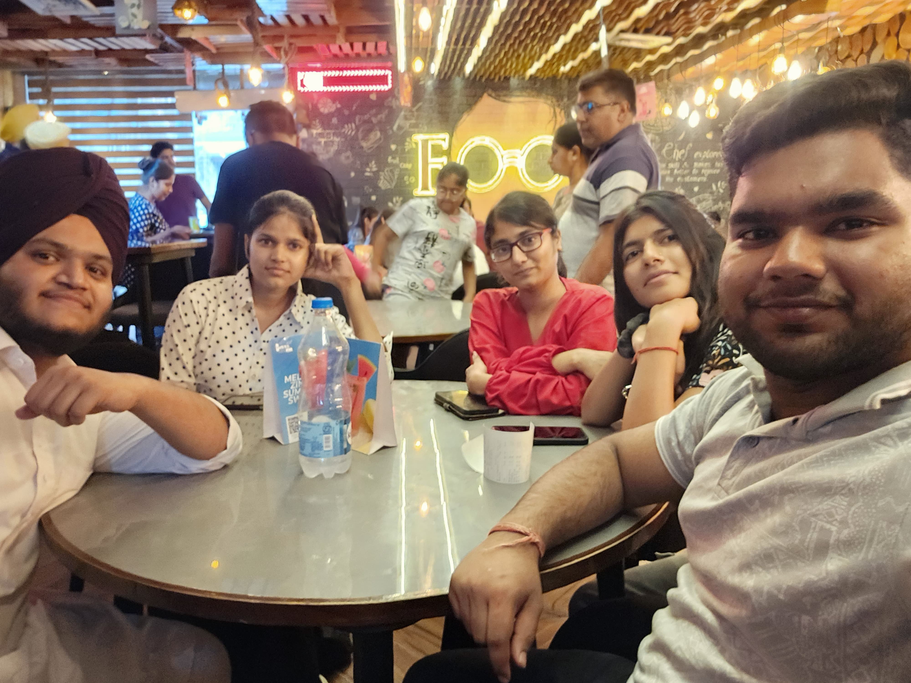

June 8, 2025
Today started kinda low — drained, distracted, and honestly a bit aimless. Exams are over, but that post-exam haze hit harder than expected. Still, I reminded myself: life doesn’t pause just because the motivation dips. Keep. Moving. Forward.
And guess what? A lovely friend took the lead and made the day sparkle 🌟 — spontaneous day out with the gang. My obsession with games pulled me toward the pool table (or is it billiards? Still not sure 😅). Either way, I loved every second of it!
We chilled at this cozy cafe — vibes were immaculate ✨ Lights, music, friends, food... it felt like a reward I didn’t even know I needed. These moments? They’re my little anchors. Especially after days that feel heavy.
I didn’t forget my tech side either. I revised some DSA topics today. Feels like revisiting old friends — confusing, but comforting? 😄 Honestly, consistency matters more than speed. And I'm trying to hold on to that lesson.
I finally tried adding a search bar on my website — to let readers filter blogs by vibe (#life, #tech, #storytime, etc.). Guess what? It worked! 🥳 Will polish it more later, but for now... that little "YES!" moment hit just right.